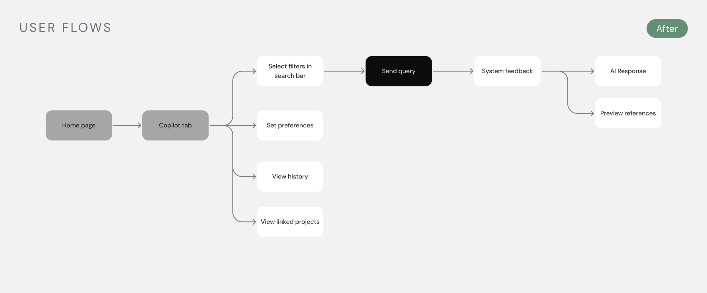
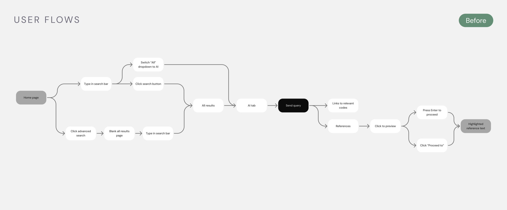

Trax helps construction professionals find and verify building code requirements digitally.
Trax digitizes 80+ Canadian building codes, helping architects, engineers, and construction professionals quickly find the requirements they need.
Copilot is Trax’s AI assistant for searching and understanding those codes. As Trax moved toward an AI-powered compliance platform, Copilot became central to the product.
Copilot was becoming central to Trax, but users had to dig to find it.
Users had to navigate through three steps to find Copilot, and its entry point looked almost identical to Trax’s regular keyword search.
Copilot needed to become a more prominent part of the platform.
As Trax leaned further into AI, we had an opportunity to make Copilot a more visible and recognizable part of the platform.
We made Copilot easier to find, easier to use, and easier to trust.
The new Copilot experience makes it easier to access AI-powered code search, refine questions with context, and verify answers against source documents.
One-click access from anywhere in Trax
Copilot moved into the top-level navigation, so users can start a question from any screen instead of digging three steps down.
Persistent filters for more focused questions
Filters stay applied across questions as editable pills, so users can narrow to a codebook or municipality once and keep refining.
Inline citations for easy source verification
Citations open a reference panel beside the answer, so users verify against the source without leaving the conversation.
conversions
I started by looking at where Copilot was falling short.
I combined heuristic evaluation, existing user feedback, and feature requests to understand where users were running into friction.
I found five key problems:
Users were asking for...
Competitors made it difficult to verify AI responses against source documents.
Most competitors relied on long responses and scattered references, forcing users to scroll through the response or leave the conversation to find the supporting source.
This gave us an opportunity to make source verification faster by keeping relevant code references close to the answer.
I mapped the existing flow and explored ways to improve it.


I mapped the existing Copilot experience to identify where users were running into friction, then explored different ways to improve the flow. The biggest gaps appeared around entering Copilot, refining a question, and verifying the response.
A technical constraint changed the direction.
I explored using color to distinguish different codebooks (e.g. fire and building codes). After reviewing the idea with development, I learned the backend didn’t currently support this distinction, so we moved it out of scope.
How should Copilot introduce its capabilities?
How should filters be displayed?
How should filter colors be used?
How should users verify an AI-generated response?
How should new questions work in the Standard tier?
We created a more discoverable and trustworthy Copilot experience.
The redesigned experience makes Copilot accessible from anywhere in Trax, helps users refine questions with persistent filters, and lets them verify answers through inline citations.
What I learned
Align early with development to understand constraints
Bring developers into the conversation early to understand technical constraints before committing to a direction.
Scope to the minimum users actually need
Keeping the scope focused helped us prioritize the problems we could meaningfully solve within the project.
Where I’d take it next
Test Copilot in real code research workflows
Observe architects, engineers, and construction professionals using Copilot to answer real compliance questions. I’d focus on whether users can find the right sources, refine their questions, and confidently validate the response.
Expand the filtering system
As more code types and project contexts are added, revisit the filter structure to make sure users can still scan and adjust their context without adding complexity.